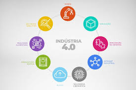
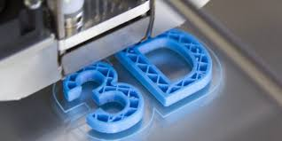
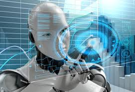

O que é Indústria 4.0
Indústria 4.0 ou Quarta Revolução Industrial é uma expressão que engloba algumas tecnologias para automação e troca de dados e utiliza conceitos de sistemas ciberfísicos, Internet das Coisas e Computação em Nuvem.
A partir disso, a indústria 4.0 consegue diminuir os seus custos de produção e aumentar a sua produtividade. Este conceito engloba as principais tecnologias disponíveis no mundo e tende a ofertar produtos e serviços mais personalizados e customizáveis para os clientes.

Sobre a Indústria 4.0
A indústria 4.0 é um novo modelo de indústria inteligente com máquinas e sistemas conectados para tomar decisões que melhoram a produtividade. Essa é, na prática, a quarta grande reviravolta nos processos de fabricação de produtos e gestão empresarial, sendo, na atualidade, a Revolução Industrial 4.0.
E essa revolução já está em curso, e é marcada, principalmente, pela convergência de tecnologias digitais, físicas e biológicas. Em outras palavras, os processos industriais integram o mundo virtual e o mundo real.
Forças por trás da Indústria 4.0
- O crescimento do Big Data: o poder computacional para armazenamento de dados e mais conectividade fazem com que as empresas produzam, além disso, analisem e acessem mais dados em seus processos produtivos;
- Novas e inovadoras formas de interação homem-máquina;
- O surgimento de ferramentas, recursos e métodos de análises de dados: soluções de Business Intelligence e metodologias complexas de gestão;
- Transferência de instruções digitais para o mundo físico: como a presença da robótica avançada e a impressão 3D.
Princípios da Indústria 4.0
ém das forças por trás desse fenômeno, cinco grandes princípios foram percebidos pelos estudiosos do tema. São eles:
- Real time: o dinamismo do mercado, aliado à revolução tecnológica, torna instantâneos os processos de captura, análise e transformação de dados;
- Virtualização: ferramentas, recursos e serviços na indústria são entregues de maneira virtualizada para serem utilizados em qualquer local, a qualquer hora e a partir de qualquer dispositivo, permitindo o controle de ambientes;
- Descentralização: segundo o professor de Inovação e Competitividade e coordenador do Núcleo de Inovação e Empreendedorismo da Fundação Dom Cabral, Carlos Arruda, a inteligência descentralizada permite criar um networking de ‘coisas e máquinas inteligentes’, fazendo o gerenciamento de processos de forma independente. Da mesma forma, não será mais necessário manter agentes humanos para tomar uma série de decisões. O próprio sistema cyber-físico redirecionará os processos, baseado nos dados recebidos da produção rapidamente junto ao real time.
- Orientação a serviços: infraestruturas e tecnologias não precisam mais ser adquiridas como um bem, portanto, podem ser aproveitadas como serviço, o que reduz custos operacionais e potencializa a inteligência competitiva das empresas;
- Modularidade: a produção por demanda ganha um espaço significante, especialmente por conta da flexibilidade para a alteração das tarefas do maquinário em poucos, cuja especificação possibilita a customização total de produtos e serviços.
Impactos da Indústria 4.0 no Mundo
- Aumento e pleno controle de produtividade;
- Redução de custos;
- Inovação na produção;
- Transformação na estrutura da fábrica;
- Tomada de decisões muito mais rápida;
- Desenvolvimento econômico
Segundo projeção da Agência Brasileira de Desenvolvimento Industrial, se o Brasil aderir o conceito e a inovação a industrial, então, a redução de custos anual será de aproximadamente 73 bilhões, economizando através do aumento de produtividade, redução de manutenção de equipamentos e economizando energia. No entanto, essa é uma realidade um pouco distante.
Já existem fábricas adeptas ao novo modelo, como é o caso das grandes Volkswagen e Ambev, mas ainda há muito a ser feito. Para exemplificação, segundo a CNI, atualmente o Brasil ocupa a 64ª posição no ranking mundial de inovação, ficando atrás de Israel e Luxemburgo.
‘Leia mais sobre como ser eficiente no planejamento financeiro da sua empresa’
Como abraçar então as oportunidades de mercado da Indústria 4.0.?
Embora a própria definição de Indústria 4.0 leve a pensar em indústrias do tipo que fabricam carros ou medicamentos a verdade é que o conceito se aplica extensivamente a qualquer setor de negócios, seja de produtos ou serviços.
Por isso, empresas como Netflix, Uber, Spotify, NuBank e Ifood ganharam destaque no mercado. Todas elas criaram nichos de mercado e derrubaram nichos mais tradicionais. Podem não ter uma linha de produção, mas os elementos por trás da Indústria 4.0 estão presentes em tudo que fazem.
ndústria 4.0 no Brasil
Ademais, em uma pesquisa da FAPESP, João Carlos Zerbini, Gerente de Tecnologia de Manufatura e Automação Industrial da Embraer, exemplifica o uso da digitalização na construção de aviões, que substituiu os milhares de papéis que eram usados para fazer os desenhos dos projetos, fato o qual exemplifica a tendência de expansão dos princípios que regem a Indústria 4.0.
Tendências já Presentes da Indústria 4.0
Ainda há muito trabalho para ser feito até que sejam evidenciados seus benefícios para as pessoas, economia e meio-ambiente. No entanto, já podemos ver algumas tendências desse fenômeno na prática de seus princípios:
- Impressão 3D
- Atualmente, a criação de um objeto físico baseado em um modelo digital está mais acessível devido as Impressoras 3D que já são um sucesso no mercado e mostram cada vez mais o seu potencial. Da mesma forma, essa tecnologia consiste na impressão de um objeto físico com base num modelo virtual, que lê configurações da imagem como cor, material e tamanho. Dessa forma, há muitos benefícios evidenciados por ela como próteses, objetos de casa e até a indústria da moda.

- Biotecnologia
- Esta é uma tecnologia que tem como base a biologia para inovação em produtos e serviços para a sociedade. Desse modo, exames de DNA, fermentação de componentes para a fabricação de bebida alcoólica configuram parte dessa ferramenta.

- Inteligência artificial
- Interconectar dados e sistemas, conectar informações de dispositivos é o que nos proporciona a Internet das coisas (IoT), possibilitando ter no ciberespaço uma interoperação completa, como uma planta digital. Além disso, a coleta e análise da IoT, dados, documentos, é o Big Data. Mas, com a interação e sinergia, a interoperabilidade trabalha com padrões abertos na interação entre tecnologia e trabalho humano, interagindo dados e permitindo novas tendências por meio da análise feita.

Outro sim, a Computação em Nuvem, por exemplo, tem o objetivo de comprimir os dados e disponibilizá-los de forma prática e de qualquer lugar. Além disso, essa tecnologia está se expandindo, com seu uso inicial em laboratórios, sendo usado em empresas, e já invadindo os dados de computadores domésticos.
- Bitcoin
- Com toda a mudança no cenário tecnológico industrial, nada mais lógico que haver uma mudança no âmbito bancário. Acima de tudo, as bitcoins já são aceitas por algumas lojas de games, hotéis e imobiliárias no mundo. Ou seja, se trata de uma moeda virtual que tem valor real e é minerada nos computadores através de processamento, não sendo pertencente a um país nem a um banco, e com ela é possível adquirir produtos e serviços.
Portanto, esperamos que as dicas tenham ajudado a se situar diante desse fenômeno global, fique por dentro dessa tendência e aumente sua competitividade minimizando custos e otimizando processos. Agende um diagnóstico gratuito e saiba do que sua empresa precisa!
Diagnóstico
Podemos dizer que a Indústria 4.0 está incorporando tecnologia inteligente e conectada não apenas dentro das organizações, mas também em nossas vidas diárias. Assim, podemos resumir essa tendência global no lema na Feira de Hannover “Integrated Industry – Connect & Collaborate”, ou seja: integrar, conectar e colaborar.